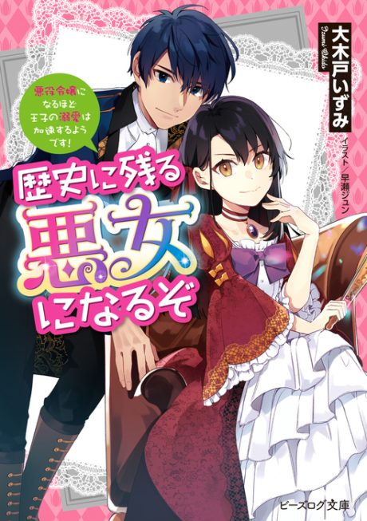

Anime
Anime
Light novelI’ll Become a Villainess Who Goes Down in History
歴史に残る悪女になるぞ
After the anime, read the light novel from Volume 2.
7.2AniList
—Animeter
13 epEpisodes
Is it worth pushing through?
Built from what visitors report across all 13 episodes.
Loading reports…Checking what other people said about this one.
Sign in above with your email to add your report.
More like I’ll Become a Villainess Who Goes Down in History
 Unclear7.7
Unclear7.7
 Manga Vol. 47.1
Manga Vol. 47.1
 Manga Ch. 517.4
Manga Ch. 517.4
 Unclear7.3
Unclear7.3
 Unclear7.3
Unclear7.3
 Done7.3
Done7.3